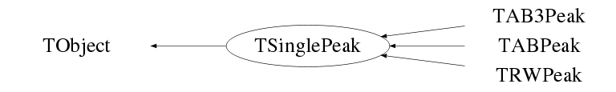

Function Members (Methods)
This is an abstract class, constructors will not be documented.
Look at the header to check for available constructors.
public:
| virtual | ~TSinglePeak() |
| void | TObject::AbstractMethod(const char* method) const |
| virtual void | TObject::AppendPad(Option_t* option = "") |
| Double_t | Area() const |
| Double_t | AreaErr() const |
| virtual void | TObject::Browse(TBrowser* b) |
| virtual Double_t | Centroid() const |
| virtual Double_t | CentroidErr() const |
| ULong_t | TObject::CheckedHash() |
| static TClass* | Class() |
| virtual const char* | TObject::ClassName() const |
| virtual void | TObject::Clear(Option_t* = "") |
| virtual TObject* | TObject::Clone(const char* newname = "") const |
| virtual Int_t | TObject::Compare(const TObject* obj) const |
| virtual void | TObject::Copy(TObject& object) const |
| virtual void | TObject::Delete(Option_t* option = "")MENU |
| virtual Int_t | TObject::DistancetoPrimitive(Int_t px, Int_t py) |
| virtual void | Draw(Option_t* opt = "") |
| virtual void | DrawBackground(Option_t* opt = "") |
| virtual void | TObject::DrawClass() constMENU |
| virtual TObject* | TObject::DrawClone(Option_t* option = "") constMENU |
| virtual void | DrawComponents(Option_t* opt = "") |
| virtual void | TObject::Dump() constMENU |
| virtual void | TObject::Error(const char* method, const char* msgfmt) const |
| virtual void | TObject::Execute(const char* method, const char* params, Int_t* error = 0) |
| virtual void | TObject::Execute(TMethod* method, TObjArray* params, Int_t* error = 0) |
| virtual void | TObject::ExecuteEvent(Int_t event, Int_t px, Int_t py) |
| virtual void | TObject::Fatal(const char* method, const char* msgfmt) const |
| virtual TObject* | TObject::FindObject(const char* name) const |
| virtual TObject* | TObject::FindObject(const TObject* obj) const |
| TF1* | GetBackgroundFunction() |
| Double_t | GetChi2() const |
| virtual Option_t* | TObject::GetDrawOption() const |
| static Long_t | TObject::GetDtorOnly() |
| TF1* | GetFitFunction() |
| virtual const char* | TObject::GetIconName() const |
| virtual const char* | TObject::GetName() const |
| Double_t | GetNDF() const |
| Int_t | GetNParameters() const |
| virtual char* | TObject::GetObjectInfo(Int_t px, Int_t py) const |
| static Bool_t | TObject::GetObjectStat() |
| virtual Option_t* | TObject::GetOption() const |
| Double_t | GetReducedChi2() const |
| virtual const char* | TObject::GetTitle() const |
| virtual UInt_t | TObject::GetUniqueID() const |
| virtual Bool_t | TObject::HandleTimer(TTimer* timer) |
| virtual ULong_t | TObject::Hash() const |
| Bool_t | TObject::HasInconsistentHash() const |
| virtual void | TObject::Info(const char* method, const char* msgfmt) const |
| virtual Bool_t | TObject::InheritsFrom(const char* classname) const |
| virtual Bool_t | TObject::InheritsFrom(const TClass* cl) const |
| virtual void | InitializeParameters(TH1* = nullptr) |
| virtual void | InitParNames() |
| virtual void | TObject::Inspect() constMENU |
| void | TObject::InvertBit(UInt_t f) |
| virtual TClass* | IsA() const |
| bool | IsBackgroundParameter(const Int_t& par) const |
| virtual Bool_t | TObject::IsEqual(const TObject* obj) const |
| virtual Bool_t | TObject::IsFolder() const |
| Bool_t | TObject::IsOnHeap() const |
| bool | IsPeakParameter(const Int_t& par) const |
| virtual Bool_t | TObject::IsSortable() const |
| Bool_t | TObject::IsZombie() const |
| virtual void | TObject::ls(Option_t* option = "") const |
| void | TObject::MayNotUse(const char* method) const |
| virtual Bool_t | TObject::Notify() |
| void | TObject::Obsolete(const char* method, const char* asOfVers, const char* removedFromVers) const |
| void | TObject::operator delete(void* ptr) |
| void | TObject::operator delete(void* ptr, void* vp) |
| void | TObject::operator delete[](void* ptr) |
| void | TObject::operator delete[](void* ptr, void* vp) |
| void* | TObject::operator new(size_t sz) |
| void* | TObject::operator new(size_t sz, void* vp) |
| void* | TObject::operator new[](size_t sz) |
| void* | TObject::operator new[](size_t sz, void* vp) |
| TSinglePeak& | operator=(const TSinglePeak&) |
| virtual void | TObject::Paint(Option_t* option = "") |
| virtual void | TObject::Pop() |
| virtual void | Print(Option_t* = "") const |
| virtual Int_t | TObject::Read(const char* name) |
| virtual void | TObject::RecursiveRemove(TObject* obj) |
| void | TObject::ResetBit(UInt_t f) |
| virtual void | TObject::SaveAs(const char* filename = "", Option_t* option = "") constMENU |
| virtual void | TObject::SavePrimitive(ostream& out, Option_t* option = "") |
| void | SetArea(const Double_t& area) |
| void | SetAreaErr(const Double_t& area_err) |
| void | TObject::SetBit(UInt_t f) |
| void | TObject::SetBit(UInt_t f, Bool_t set) |
| virtual void | TObject::SetDrawOption(Option_t* option = "")MENU |
| static void | TObject::SetDtorOnly(void* obj) |
| void | SetGlobalBackground(TF1* bg) |
| void | SetListOfBGPar(vector<bool> list_of_bg_par) |
| static void | TObject::SetObjectStat(Bool_t stat) |
| virtual void | TObject::SetUniqueID(UInt_t uid) |
| virtual void | ShowMembers(TMemberInspector& insp) const |
| virtual void | Streamer(TBuffer&) |
| void | StreamerNVirtual(TBuffer& ClassDef_StreamerNVirtual_b) |
| virtual void | TObject::SysError(const char* method, const char* msgfmt) const |
| Bool_t | TObject::TestBit(UInt_t f) const |
| Int_t | TObject::TestBits(UInt_t f) const |
| TSinglePeak() | |
| TSinglePeak(const TSinglePeak&) | |
| void | UpdateBackgroundParameters() |
| virtual void | TObject::UseCurrentStyle() |
| virtual void | TObject::Warning(const char* method, const char* msgfmt) const |
| virtual Double_t | Width() const |
| virtual Int_t | TObject::Write(const char* name = 0, Int_t option = 0, Int_t bufsize = 0) |
| virtual Int_t | TObject::Write(const char* name = 0, Int_t option = 0, Int_t bufsize = 0) const |
protected:
| virtual Double_t | BackgroundFunction(Double_t*, Double_t*) |
| virtual void | TObject::DoError(int level, const char* location, const char* fmt, va_list va) const |
| void | TObject::MakeZombie() |
| virtual Double_t | PeakFunction(Double_t*, Double_t*) |
| virtual Double_t | PeakOnGlobalFunction(Double_t* dim, Double_t* par) |
| void | SetChi2(const Double_t& chi2) |
| void | SetNDF(const Int_t& ndf) |
| Double_t | TotalFunction(Double_t* dim, Double_t* par) |
private:
| virtual Bool_t | CheckTObjectHashConsistency() const |
Data Members
public:
| static TObject::(anonymous) | TObject::kBitMask | |
| static TObject::EStatusBits | TObject::kCanDelete | |
| static TObject::EStatusBits | TObject::kCannotPick | |
| static TObject::EStatusBits | TObject::kHasUUID | |
| static TObject::(anonymous) | TObject::kInconsistent | |
| static TObject::EStatusBits | TObject::kInvalidObject | |
| static TObject::(anonymous) | TObject::kIsOnHeap | |
| static TObject::EStatusBits | TObject::kIsReferenced | |
| static TObject::EStatusBits | TObject::kMustCleanup | |
| static TObject::EStatusBits | TObject::kNoContextMenu | |
| static TObject::(anonymous) | TObject::kNotDeleted | |
| static TObject::EDeprecatedStatusBits | TObject::kObjInCanvas | |
| static TObject::(anonymous) | TObject::kOverwrite | |
| static TObject::(anonymous) | TObject::kSingleKey | |
| static TObject::(anonymous) | TObject::kWriteDelete | |
| static TObject::(anonymous) | TObject::kZombie |
Class Charts



Function documentation
bool IsBackgroundParameter(const Int_t& par) const
bool IsPeakParameter(const Int_t& par) const
Int_t GetNParameters() const
TF1* GetBackgroundFunction()
Double_t TotalFunction(Double_t* dim, Double_t* par)
void UpdateBackgroundParameters()
void DrawComponents(Option_t* opt = "")
This behaves like the draw function except each daughter class decides how to break the draw into multiple components. This means that we should delegate this task to the daughted class.
Double_t PeakOnGlobalFunction(Double_t* dim, Double_t* par)
void Draw(Option_t* opt = "")
We need to draw this on top of the global background. Probably easiest to make another temporary TF1?
Double_t CentroidErr() const
void SetGlobalBackground(TF1* bg)